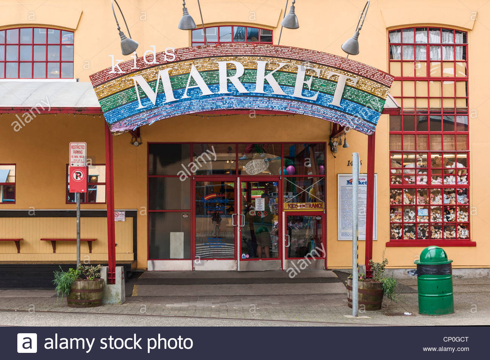
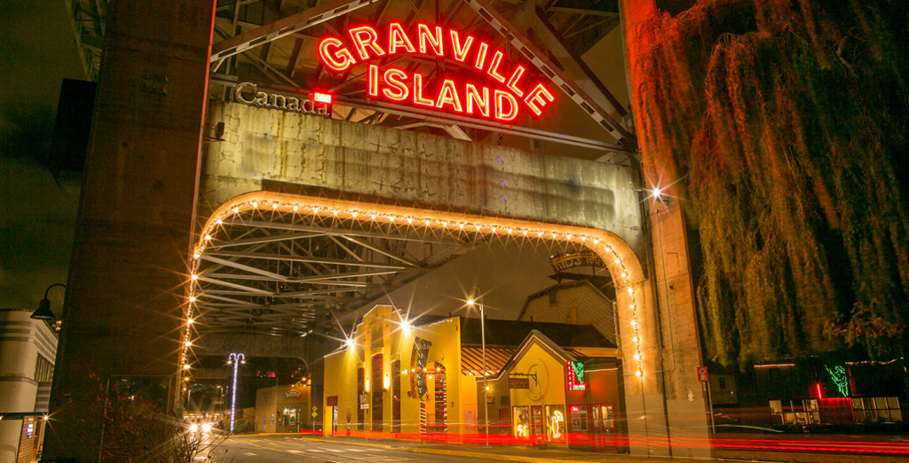

Kids Market, Granville Island
Warehouse-style, kid-centric shopping mall with a caboose, play area & an arcade, plus a bistro. is an established destination for family fun and adventure. With 2 levels of retail, entertainment, and a children’s only hair salon in the main building. Find pet treats in the 50 year old Canadian Pacific Caboose out front and more retail and food in the 2 annex buildings at the back.
CREATED
in 1984, Kids Market transformed a hundred year old building that was originally a paint factory into a magical place for kids with expansive wood-beam ceilings, large windows and an airy market design.
EXPLORE
all that Kids Market has to offer to entertain and delight kids of all ages. The Kids Market also has a place where you can have your birthday party. I've never been there, but it looks pretty cool. If parents want to shop, and their kids hate shopping, they can drop them off at the Adventure Zone. It has ball pits, slides, punching bags, and probably some other stuff I don't know about. Also, if it's a hot day, and your kids are tired of playing games, you can head over to the water park. It has water guns, a playground, waterslides and lots of water sprayers.
Expense rating
It doesn't cost any money to get into the Kids Market, but you do have to pay for the Adventure Zone and to play the arcade games. But, like I said before, you can't beat the price (25 cents per game).